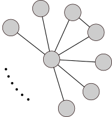
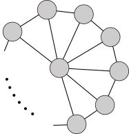

Due to the shorter-than-normal time to the deadline for this assignment, it is short (with extra credit) and will be worth 50 points. Each of the three problems below has two options, and you can just pick one of each for the full 50 points. If you do both options you can get up to 100 points (still graded out of 50, so that’s up to 50 points of extra credit added in to your assignment total).
(15 points) Below are two problems that lead you through the process of proving NP-completeness step-by-step. Solve either one (your choice) for full credit, or both for extra credit.
This problem deals with graph coloring, which was defined in your previous assignment. In this problem, however, we don’t care how many colors are used, but want to maximize the number of vertices that use the same color.
MAX-MONOCHROME = {⟨G, k⟩ : there is a coloring of graph G in which
at least k vertices have the same color}
To understand the problem, consider the following graph, in which one vertex (the “hub”) is connected to n − 1 other vertices (the “spoke” vertices), and two (and only two) of the spoke vertices are connected, like this:

This graph has chromatic number 3. Of all of the different ways of coloring this graph with 3 colors, what is the largest number of vertices that could be assigned the same color? What is the smallest number of vertices that could be assigned the same color? What if we are able to use more than 3 colors – what is the smallest number of vertices that could be assigned the same color in that situation?
Prove that MAX-MONOCHROME ∈ NP
The complement of a graph G = (V, E), denoted $\overline{G}$, is defined as the graph with the same vertex set and in which vertices are connected if and only if they were not connected in G. In other words, if $\overline{G}=(V,E')$ where
E′ = {(v, w) : v, w ∈ V and (v, w) ∉ E}
Prove that if G has a clique of size k then $\overline{G}$ can be colored such that ≥ k vertices have the same color.
Prove that if $\overline{G}$ can be colored such that k vertices have the same color, then G has a clique of size ≥ k.
Use the results of the preceding parts to prove that MAX-MONOCHROME is NP-complete, using a reduction from CLIQUE.
Consider the problem of picking locations for fire stations in a city, where you want every location to be close to a fire station. We will generalize this to a problem on graphs, where we want to select vertices of a graph such that every vertex is either selected or is next to a vertex that is selected – we’ll call a set of vertices that meets this property a “within-one set of vertices” since every vertex is within distance one of a selected vertex (a fire station). Obviously the set of all vertices is a within-one set, so our challenge is to find the smallest possible within-one set. This decision problem captures the problem:
WITHIN-ONE = {⟨G, k⟩ : there is a within-one subset V′ ⊆ V with
|V′| ≤ k }
To understand the problem, and how it is related to (and different from!) the vertex cover problem, consider the following graph, in which one vertex (the “hub”) is connected to n − 1 other vertices (the “spoke” vertices), and the spoke vertices are connected in a ring, like this:

What is the size of the smallest “within-one” set of vertices in this graph? What is the size of the smallest vertex cover in this graph?
Prove that WITHIN-ONE ∈ NP
Given any graph G = (V, E), we create a new graph called the triangulated-edge graph, denoted te(G), by taking each edge e = (u, v) ∈ E, creating a new vertex ve, and adding edges (u, ve) and (ve, v) to connect ve to both u and v. te(G) also contains all of the vertices and edges from G, so te(G) has |V| + |E| vertices and 3|E| edges.
Prove that if G has a vertex cover with k vertices, then te(G) has a within-one set of k vertices.
Prove that if te(G) has within-one set of k vertices, then G has a vertex cover with ≤ k vertices.
Use the results of the preceding parts to prove that WITHIN-ONE is NP-complete, using a reduction from VERTEX-COVER.
(20 points) Below are two problems in which you must write a full NP-completeness proof, without the step-by-step leading of the previous question. Solve either one (your choice) for full credit, or both for extra credit. In your proof, you must decide on what “known NP-complete” problem to use for a reduction, and you may use any NP-complete problem mentioned in the book (either in the text or in an exercise). These are the problems you can use: HAM-CYCLE, HAM-PATH, CIRCUIT-SAT, SAT, 3-CNF-SAT, CLIQUE, VERTEX-COVER, TSP, SUBSET-SUM, SET-PARTITION, LONGEST-CYCLE, or LONGEST-PATH. Don’t use anything other than these problems, even if it’s known to be NP-complete.
There is a warehouse with n items, which have weights W = (w1, w2, ⋯, wn). You can hire thieves to help rob the warehouse, but they belong to a guild that says no thief is allowed to carry more than b pounds. We say a set of k thieves can “clear out the warehouse” if every item can be assigned to some thief, and the total weight carried by each thief is ≤ b pounds. You want to be able to clear out the warehouse by hiring the minimum possible number of thieves. Here is the relevant language (decision problem):
K-THIEVES = {⟨W, b, k⟩ | k thieves can clean out the warehouse }
Example: Consider items with weights (6,9,12,6,3,6,15,6), where thieves can carry up to 21 pounds. Three thieves can clear out this warehouse where the three thieves carry items with weights (6,9,6), (12,6,3), and (15,6). However, if that last item had weight 7, then you would need four thieves to clear out the warehouse.
Prove that K-THIEVES is NP-complete.
At your workplace there are a lot of committees that consist of different subsets of employees. There’s a lot of committee work, so people can be assigned to multiple committees. There is a mandate from your CEO to make sure at least one member of each committee has been sent to “awesomeness training.” Awesomeness training is expensive though, so you want to minimize the number of people you send to training.
Here’s how we formalize this problem: Given a set A of employees, and a collection C = (C1, C2, ⋯, Cn) of committees where each Ci ⊆ A, a set of trained employees T ⊆ A meets the mandate if Ci ∩ T is non-empty for every committee Ci (in other words, every committee has at least one trained member).
K-TRAINEES = {⟨C, k⟩ | there is a set T of employees with |T| ≤ k that meets the mandate }
Prove that K-TRAINEES is NP-complete.
(15 points) Below are two problems on approximation algorithms. Solve either one for for full credit, or both for extra credit.
Consider the following greedy algorithm for the K-THIEVES problem (defined above): we assign items in order, first item 1 then item 2 then item 3 and so on, giving the largest number of items you can to thief 1 before you send him on his way and start loading up thief 2. This problem will prove how well this works. The points below lead you through the solution, but it is vital that you pay careful attention to when you have integer values (and use floors and ceilings when needed) and which inequalities are strict or not (i.e., “<” vs. “≤” is important!).
Argue that if thief 1 is given a total weight of t1 pounds and thief 2 is given a total weight of t2 pounds, then t1 + t2 > b.
Generalize the result from (i) to prove that if $w=\sum_{i=1}^N w_i$ is the sum of all the weights and k is the number of thieves allocated by this algorithm, then $\lfloor k/2\rfloor < \frac{w}{b}$.
Prove that if OPT is the optimal number of thieves needed, then OPT $\geq\frac{w}{b}$.
Combine the above results to prove that this greedy algorithm is a 2-approximation algorithm. More specifically, you should prove that k ≤ 2 ⋅ OPT − 1 (again, integer values and correctly handling strict vs. non-strict inequalities is vital!)
Consider the following greedy algorithm for the K-TRAINEES problem (defined above): Pick an arbitrary committee Ci and send all member of that committee to awesomeness training. Then remove every committee from your set of committees that contain any member from Ci (including Ci). Repeat this until all committees have been removed.
If every committee has at most 5 members, then this is a 5-approximation algorithm. Prove this.
Hint: This is a very straightforward generalization of the greedy algorithm for vertex cover that is in the book and discussed in class. The approximation bound proof is a generalization of the proof given in the book for vertex cover.